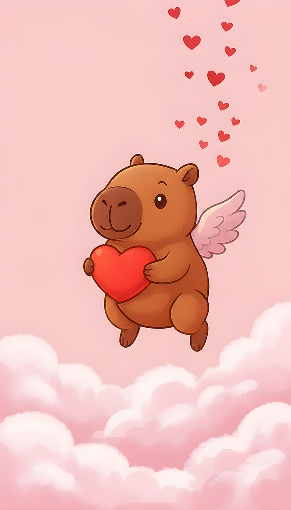
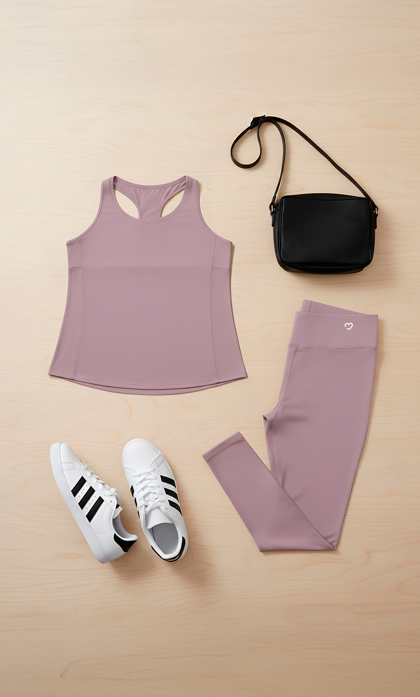
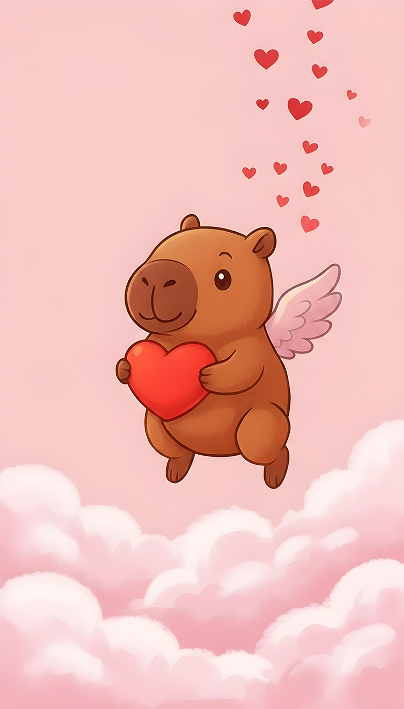
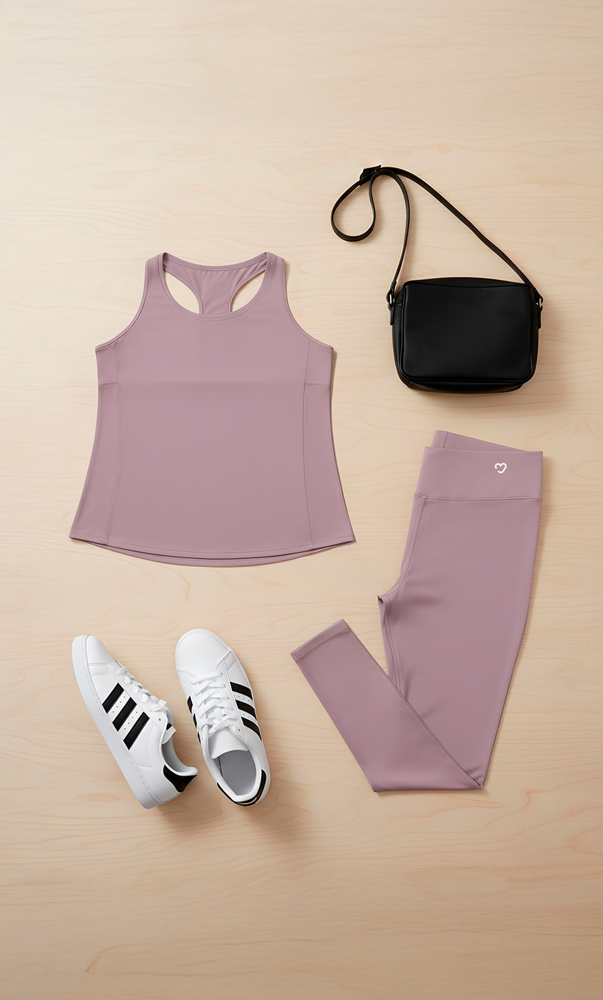

Diseño como quien edita una revista: seleccionando, recortando y dejando respirar.
Mi nombre es Andrés González. Trabajo la imagen como lenguaje, no como decoración. Cada proyecto es una decisión visual, no una acumulación de efectos.
Vengo de la producción multimedia, pero mi enfoque se inclina hacia lo editorial, la moda digital y la identidad visual. Me interesa lo que se siente silencioso, lo que no necesita explicarse.
Exploro herramientas digitales e inteligencia artificial como extensiones creativas, no como atajos.

 


